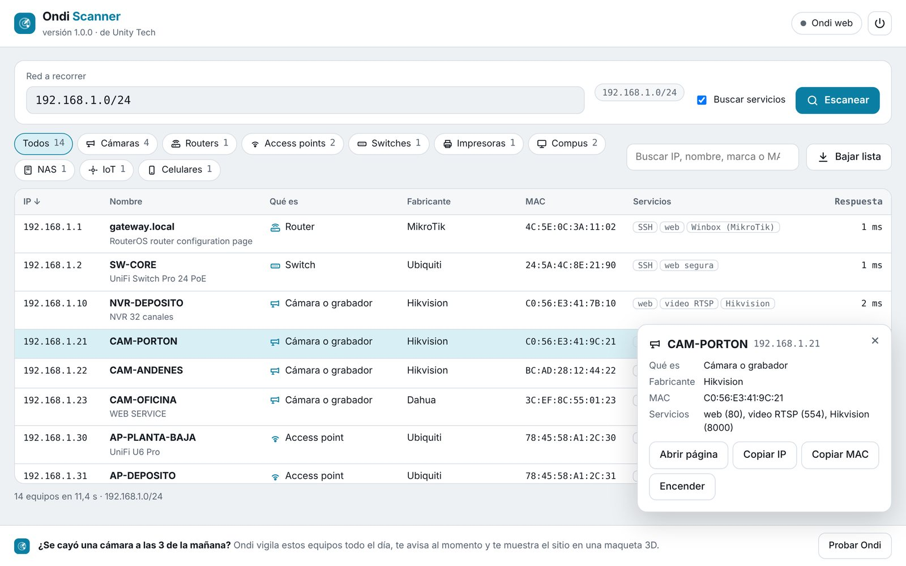

Todos los equipos de la red, en segundos
Ondi Scanner es el escáner de red gratis de Ondi. Encuentra cámaras, grabadores, routers, access points, impresoras y compus, con su IP, nombre, fabricante, MAC y qué servicios tienen. Sin instalar nada.
Versión 1.0.0 · Windows 10 y 11, macOS 11 o más nuevo (Intel y Apple).

Encuentra todo lo que responde
Recorre la red de tu compu o la que le digas, hasta 4096 direcciones. Saca el nombre de cada equipo y el fabricante por la MAC.
Te dice qué es cada equipo
Reconoce grabadores y cámaras Hikvision y Dahua, routers MikroTik, access points UniFi, impresoras, NAS y compus Windows.
Muestra qué servicios tiene
Página de administración, video RTSP, SSH, Winbox, escritorio remoto, carpetas compartidas e impresión, con el título de cada página.
Y te deja hacer algo
Abrir la página del equipo, conectarte por escritorio remoto, encender una compu por la red y bajar la lista para Excel.
Cómo se abre la primera vez
Windows
- Abrí OndiScanner.exe.
- Si Windows avisa «Windows protegió su PC», tocá Más información y después Ejecutar de todas formas.
- Se abre en el navegador. Para cerrarlo, el botón de apagado de arriba a la derecha.
Mac
- Abrí el zip y pasá Ondi Scanner a Aplicaciones.
- La primera vez: clic derecho sobre la app → Abrir. En macOS 15: Configuración del Sistema → Privacidad y seguridad → Abrir igual.
- Se abre en el navegador.
El programa todavía no tiene firma digital de Microsoft ni de Apple; por eso la primera vez piden confirmar. El escaneo queda en tu compu: lo único que baja de internet es la lista oficial de fabricantes de placas de red (IEEE).
¿Y si se cae una cámara a las 3 de la mañana?
Ondi vigila estos mismos equipos todo el día, te avisa al momento y te muestra cada predio en una maqueta 3D. Con Ondi Scanner abierto, Ondi también escanea la red del cliente y mide el wifi caminando para el mapa de calor.